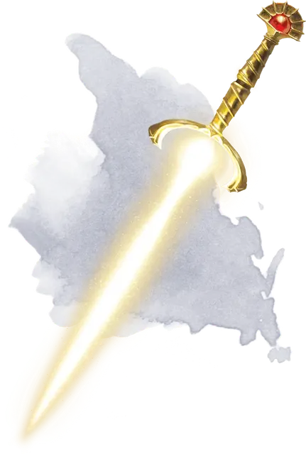

Несущая Рассвет
Dawnbringer
Оружие (длинный меч), легендарное (требуется настройка существом с любым мировоззрением, кроме злого)

Рекомендованная стоимость от 50 001 зм
Несущая Рассвет – это позолоченная рукоятка длинного меча, которая была затеряна в Подземье в течение веков. Держа рукоять, вы можете бонусным действием вызвать лезвие из чистого света, льющегося из рукоятки, или заставить его исчезнуть. Несущая Рассвет обладает всеми свойствами солнечного клинка [sun blade].
Держа оружие вы можете потратить действие на то, чтобы коснуться лезвием существа и таким образом наложить на него заклинанием малое восстановление [lesser restoration]. Использовав эту способность вы не сможете воспользоваться ей до следующего рассвета.
Разумность. Несущая Рассвет – это разумное оружие нейтрально-доброго мировоззрения с показателями Интеллекта 12, Мудрости 15 и Харизмы 14. Оно способно слышать и обладает тёмное зрением в радиусе 120 футов.
Меч понимает, читает и говорит на Общем и может общаться с владельцем телепатически. Обладает добрым женским голосом. Он также владеет всеми языками, которыми владеете вы, пока остаетесь настроенным к мечу.
Личность. Несущая Рассвет, выкованная древними служителями солнца, создана для того, чтобы нести свет во тьму и сражаться с порождениями тьмы. Она добра и милосердна к страждущим, но жестока и беспощадна к своим врагам.
Многие годы, проведенные в тьме, заставили Несущую Рассвет бояться тьмы и одиночества. Она желает, чтобы её лезвие непрерывно освещало тьму, и против того, чтобы разлучаться со своим носителем на какой бы то ни было промежуток времени.